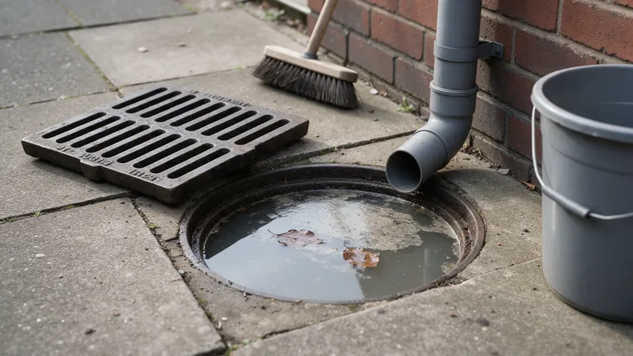

How we work a blockage
Blockages are a process of elimination and the covers do most of the telling. We start at the house and work outwards, lifting every chamber on the run. The first one that is full is where the blockage starts, and everything upstream of it is backing up because of it.
Then we clear it from the chamber below, not above. Rodding down onto a blockage packs it tighter; rodding up into it from the low end breaks it apart and lets it go away from you. It sounds like a detail and it is the difference between twenty minutes and an afternoon.
Rods, then the jet
Rods shift the plug. The jet is what takes the fat, the scale and the paper residue off the pipe wall behind it, back to full bore. A lot of callbacks happen because somebody did the first part and went home. If the run has been blocking repeatedly, the jet matters more than the rods.
Then the camera
Once it is running we put a camera down it, because a drain that has blocked once will tell you whether it is going to block again. If the pipe is sound and somebody has flushed something they should not have, we will say so and that is the end of it. If there is a root, a crack or a belly in the run, you get to see it on the screen rather than take our word for it.
Shared runs
Terraced streets are full of back runs serving four or six houses. If yours is one of them, the chamber that is full might be two doors down, and the fix helps everybody on it. We will tell you if that is the case, and whether the stretch in question is still inside anybody's boundary or has become the water company's.

Generated photoGenerated for this demo. Not a photograph of a real job.
On the day
How this one usually goes.
- Covers up, house outwardsEvery chamber on the run until we find the full one. That tells us where the blockage is without guessing.
- Clear from the low endRods up into the blockage, so it breaks apart and goes away from you rather than packing tighter.
- Jet the run back to boreThe jet takes the fat and the scale off the pipe wall behind the plug. This is the part that stops it coming back next month.
- Camera and a straight answerClear and sound, something worth fixing, or one for the water company. You see the screen either way.
- Covers back, path washed offChambers go back down properly and the area gets washed down. You should not be able to tell we were there.
A sample running order for this demo. Yours depends on what is under the covers.
Questions
Asked about this job.
My toilet is full and will not flush away. What do I do first?
Stop flushing it. A second flush on a blocked run is the single most common way a slow drain turns into a wet floor.
Then go outside and lift the chamber cover if you can do it safely. If that chamber is full, the blockage is somewhere down the run and we will need to come to it. If it is empty, the problem is in the short stretch between the toilet and that chamber, which is usually a quicker job.
Will the mess come into the house?
It can, and that is the thing we are racing. Waste water takes the lowest opening it can find, which in most houses is a downstairs shower tray, a ground floor toilet or an outside gully.
Keeping the water off is what buys time. No washing machine, no dishwasher, no baths, and nobody flushing to check. That alone has saved plenty of carpets.
What causes most of the blockages you clear?
Wipes and fat, by a long way. Wipes do not break up the way paper does, flushable on the packet or not, so they catch on anything rough and then everything else catches on them. Fat goes down the sink warm and sets solid on the pipe wall in a cold run.
After those two it is roots through a cracked clay pipe, and a belly in the run where the ground has settled. The last two are not your fault and they do not get better on their own.
Do the chemicals from the supermarket work?
Not on a properly blocked run. The liquid sits on top of the blockage and does very little except make it unpleasant for whoever has to deal with it afterwards.
On older pipework the strong caustic ones do the joints no favours either. Rods and a jet shift it and, more to the point, tell you what it was.
General trade knowledge written for this demo, not advice on your drain.
Our work
Sample jobs like this.
 Generated photoGully full to the rimPrescot · sample
Generated photoGully full to the rimPrescot · sample Generated photoRodded from the low endMaghull · sample
Generated photoRodded from the low endMaghull · sample Generated photoJetted back to full boreSouthport · sample
Generated photoJetted back to full boreSouthport · sample Generated photoToilet that would not go awayFormby · sample
Generated photoToilet that would not go awayFormby · sampleMade up samples with generated pictures. Tap one for the detail.
Also
The other things we do.
Drain camera surveys
A camera down the run so you can see the inside of the pipe instead of guessing. Footage and a plain written report after.
More →Drain repairs and relining
Cracks, open joints and roots put right from inside the pipe where we can, with a patch or a liner cured in place.
More →Soakaways and land drainage
Rainwater taken away from the house and the lawn. We test what the ground actually does before anybody prices the dig.
More →Gully and gutter outlet clearing
The silt out of the gully pot and the outlet flushed through, so the downpipe stops running down the wall.
More →Septic tank and cesspit help
The drainage side of it: the runs in and out, the chambers and the condition of the pipework. Emptying is a tanker job.
More →Shall we come and look?
Tell us what it is doing and your postcode and we will book someone in. If waste water is coming up now, use the urgent line instead.